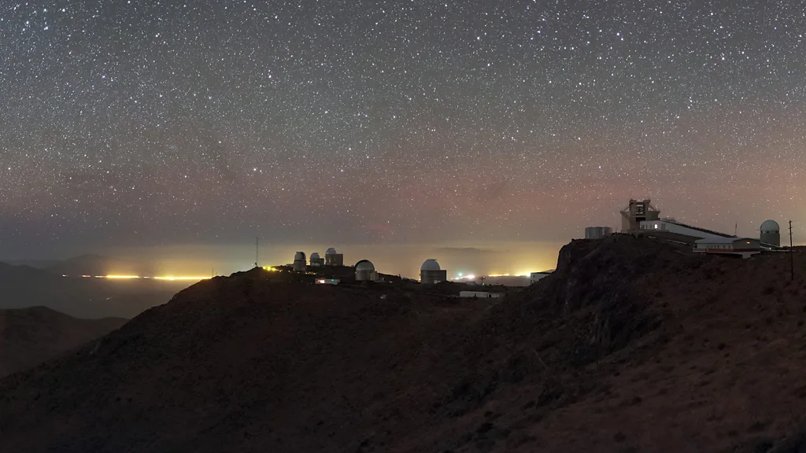

This remote desert in South America is one of the best places in the world for astronomy, but the slow encroachment of artificial light threatens that. It is a sign of just how inescapable light pollution now is.
It's 2:00 in Chile's Atacama Desert, and I wake up in the dark. Inside my room, it's the kind of black where you don't know if your eyes are open or shut. I reach for my phone, hoping for some light to orient myself. But then I remember where I am.
Instead, I edge towards my room's back door, which leads directly out onto the desert floor. My feet step from smooth tiles to the crunch of dry rock and sand. Outside the landscape is silent, but the stars above are incandescent - the sky is nothing short of complete.
Here, in this wilderness, keeping the lights off has spectacular rewards.
"There are very few places on Earth with these conditions," says Itziar de Gregorio-Monsalvo, a senior astrophysicist with the European Southern Observatory in Chile. Astronomers like her flock to this remote part of the Atacama Desert precisely for the view I'm enjoying.
But every year, artificial light from nearby cities, industrial complexes and mining operations are clouding the sky. Researchers are fighting to preserve the view, but unless something changes, one of the last places on Earth untainted by human light pollution may soon become too bright for new discoveries.
What's at stake is our understanding of the Universe itself.
When I look skywards where I live in London, the artificial glow of millions of lightbulbs hangs over the city, obscuring all but the brightest stars. But in the Atacama Desert, the night sky is more dense and vivid than I have ever seen.
I'm visiting Paranal, an astronomical base operated by the European Southern Observatory (Eso), which is home to some of the world's most advanced ground-based telescopes. With clear skies and minimal light, its position in the sparsely populated Atacama Desert provides the perfect setting for professional astronomy.
If we let the glow of human light reach ever-further across the sky, it won't just be astronomers that lose out - we risk separating ourselves from the Universe we live in.
for linux users, type below command in termainal
eget da-luce/astroterm
./astroterm
Looking up, I see the pale, white stripe of the Milky Way daubed on a canvas of dazzling points. Remarkably, I also spy two splodges of green that I assumed would be impossible to perceive with the naked eye: the Magellanic clouds - a pair of dwarf galaxies. They are so far away that some of their light has travelled across the cosmos for approximately 200,000 years.
While that light was still 200 years from reaching Earth, Lord Byron published his gloomy, apocalyptic poem Darkness, a nightmare vision of a world with no light at all. "The bright Sun was extinguished," he wrote, "and the stars did wander darkling in the eternal space". He feared a Universe of total darkness. Two centuries later, we've built the opposite problem.
Every year, artificial lighting from outside Paranal has been creeping ever-closer. Here, the dark is precious - and endangered.
The battle against encroaching artificial light in the Atacama is a microcosm of a global problem. As electric bulbs have proliferated, around 80% of Earth's population now lives under light-polluted skies. A recent study of star visibility found that, on average globally, the sky brightened due to light pollution by almost 2% 10% a year between 2011-2022. If a person could see 250 stars at the start of the period, the researchers found, they would only spot 100 by the end.
Psychologists have suggested that disappearing stars could worsen mental wellbeing 1, by removing a long-term human connection to the natural world. And ecologists have shown that when artificial light tricks animals and plants into believing it is daytime, it can affect their behaviour and physiology, disrupting ecosystems. For these reasons, some researchers argue that excess light should now be classified as a "hard" pollutant alongside chemical pollution of air or water. Even without any chemical formula like CO2, CH4, NO3- etc.
In short, a lighter world is not necessarily a brighter one.
[1] published on ScienceDirect